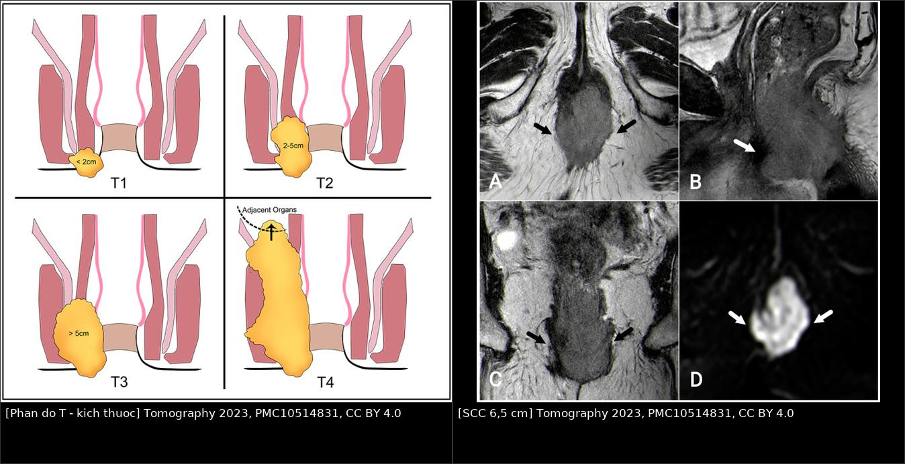

3173 — Ung thư biểu mô ống hậu môn trên MRI: phân độ T theo KÍCH THƯỚC, không theo độ sâu / Anal canal squamous cell carcinoma on MRI
Tags: pattern:khoi-ong-hau-mon pattern:day-co-that pattern:ha-hach-beo vung:hau-mon vung:tieu-khung protocol:MRI-tieu-khung protocol:DWI score:TNM8 score:mrT
Mức chắc chắn (certainty): tổng hợp y văn (literature synthesis) — ghép 4 nguồn mở toàn văn: (a) tổng quan hình ảnh – phân độ anal cancer (Congedo A et al., Tomography 2023, PMC10514831, CC BY 4.0); (b) phân tích 228 ca MRI trước hóa–xạ (Sekhar H, Kochhar R, Carrington B et al., Br J Cancer 2024, PMC11442706, CC BY 4.0); (c) ca ASCC lan rộng có ảnh MRI (Linkous BK, Merchant N, Ptak F et al., Cureus 2025, PMC12551345, CC BY 4.0); (d) ca đáp ứng hoàn toàn sau hóa–xạ trên MRI theo dõi (Nougaret S, Wood V, Rouanet P et al., Br J Radiol 2026, PMC13489399, CC BY 4.0). Số nào nguồn không đưa thì ghi "chưa rõ".
Bài này trả lời 4 câu hỏi của ca "khối hậu môn 3 cm, MRI thấy ăn vào cơ thắt — T mấy?" (1) Vì sao ung thư ống hậu môn phân độ T theo KÍCH THƯỚC, trong khi ung thư trực tràng phân độ theo ĐỘ SÂU? (2) Xâm lấn cơ thắt có làm lên T4 không? (3) Hạch bẹn là hạch VÙNG hay hạch DI CĂN XA? (4) Sau hóa–xạ, dày + phù tăng tín hiệu T2 là u tồn tại hay giả u do xạ? Đây là mặt ung thư ống hậu môn; các mặt chức năng của cùng vùng ở 546 – Rối loạn vận động tống phân/anismus và 545 – Sa sàn chậu & MR defecography; chảy máu muộn sau xạ ở 112.
1. Tổng quan bệnh học – cơ chế hình ảnh
1.1 Giải phẫu: vì sao ống hậu môn "không có lớp để xâm lấn"
- Chiều dài 3,5–4 cm. Có hai mốc: ống hậu môn giải phẫu (từ đường răng lược/dentate line tới bờ hậu môn) và ống hậu môn phẫu thuật (từ ngã ba hậu môn–trực tràng tới bờ hậu môn) — ống phẫu thuật dài hơn (PMC10514831). Đường răng lược không thấy trực tiếp trên MRI; người ta chia ống hậu môn làm 3 và đặt nó ở ranh giới 1/3 trên – 2/3 dưới.
- Phức hợp cơ thắt (sphincter complex) gồm: cơ thắt trong (internal anal sphincter — IAS) là phần tiếp nối của lớp cơ vòng trong của trực tràng; cơ thắt ngoài (external anal sphincter — EAS) là cơ vân, cùng nhóm với phần dưới cơ nâng hậu môn (levator ani) và cơ mu–trực tràng (puborectalis); giữa hai lớp là khoang liên cơ thắt (intersphincteric space) chứa mô xơ–mỡ.
- Tín hiệu T2 chuẩn (đây là "bảng màu" để đọc): IAS = tín hiệu trung bình–thấp, ngấm thuốc MẠNH; EAS = có vân, T2 THẤP hơn IAS, ngấm thuốc YẾU hơn; khoang liên cơ thắt = T2 CAO (mỡ), KHÔNG ngấm thuốc (PMC10514831, Hình 3). U = T2 cao hơn cơ vân, T1 trung bình–thấp.
- TẠI SAO u sáng trên T2: tế bào u đặc + phù gian bào → nhiều nước tự do → T2 dài; cơ vân vốn T2 ngắn nên tương phản rõ. Cạm bẫy vật lý: IAS cũng trung bình–thấp, nên u nhỏ có thể đồng tín hiệu với IAS và bị bỏ — đây là lý do DWI phải có: u tăng sinh dày đặc → hạn chế khuếch tán, sáng trên DWI b cao/ADC thấp, tách khỏi cơ lành.
- TẠI SAO phân độ T theo KÍCH THƯỚC (khác trực tràng): trực tràng có thang lớp (niêm mạc → dưới niêm → cơ → mỡ quanh trực tràng), nên T gắn với độ sâu xuyên qua từng lớp. Ống hậu môn không có thang lớp đó — chính phức hợp cơ thắt là "thành" của ống. Vì vậy ăn vào cơ thắt không phải là "ra ngoài thành". ESMO nói rõ: xâm lấn EAS và/hoặc IAS, cơ mu–trực tràng, cơ nâng hậu môn, thành trực tràng hay da quanh hậu môn KHÔNG làm đổi T4 (PMC10514831). Đây là khác biệt cốt lõi và là lỗi hay gặp nhất khi bác sĩ đọc theo phản xạ trực tràng.
1.2 Số liệu định lượng bắt buộc nhớ
| Đại lượng | Con số | Nguồn |
|---|---|---|
| Tuổi hay gặp / giới | 45–75 tuổi, nữ > nam; typ mô học hay nhất là SCC | PMC10514831 |
| Yếu tố nguy cơ | HPV 16/18, HIV/ức chế miễn dịch, quan hệ hậu môn nhận, tiền sử K cổ tử cung/âm hộ, thuốc lá | PMC10514831 |
| Di căn xa lúc chẩn đoán | ~6% (hay gặp: hạch cạnh ĐMC/chậu chung, gan, phổi) | PMC10514831 |
| Sống 5 năm toàn bộ (đoàn hệ MRI, 228 ca) | 74% (trung vị theo dõi 60,9 tháng) | PMC11442706 |
| Kích thước u (mrT) là yếu tố tiên lượng | HR 1,12/cm cho tử vong; HR 1,43/cm cho thất bại tại chỗ–vùng | PMC11442706 |
| Hạch dương | HR 2,08 (sống) · HR 2,70 (thất bại tại chỗ–vùng) | PMC11442706 |
| Xâm lấn mạch ngoài thành (mrEMVI) | HR 3,66 (95% CI 1,88–7,41) — yếu tố mới, độc lập | PMC11442706 |
| Thất bại tại chỗ–vùng 3 năm | 16,5% | PMC11442706 |
| Sống 5 năm theo hạch | N0 76% vs N1 53,5% | PMC10514831 |
| T4 trong đoàn hệ 228 ca | 19,7% (âm đạo 37, tiền liệt tuyến 7, cả hai 1) | PMC11442706 |
| Hóa–xạ trị (CRT) | sống 5 năm ~80%; đáp ứng hoàn toàn 50–75% khi u ≥ 5 cm | PMC10514831 |
| Hạch "nghi" trên MRI | trục ngắn > 9 mm; 5–8 mm + ≥ 2 đặc điểm nghi, < 5 mm + 3 đặc điểm; đặc điểm = tròn, bờ không đều, tín hiệu không đồng nhất | PMC10514831 (ESGAR) |
| PET/CT bổ trợ | lên giai đoạn 15%, xuống giai đoạn 15% | PMC10514831 |
| Độ đồng thuận giữa người đọc | mrT ICC 0,73–0,88 (khá–mạnh) nhưng hạch κ 0,53–0,66 (yếu–trung bình) | PMC11442706 |
- Hệ quả thực hành: phân độ T đọc được khá ổn định; N là chỗ dao động nhất → đừng "chốt" hạch chỉ bằng thước đo, phải mô tả hình thái và đề xuất FNA/PET khi hạch 5–9 mm mà lâm sàng cần biết.
2. Mẫu hình + chẩn đoán phân biệt theo vị trí (Gamut)
- Mẫu hình 1 — "thành ống hậu môn dày, có khối ngấm thuốc": SCC ống hậu môn (bài này) · adenocarcinoma lan xuống từ trực tràng thấp · melanoma hậu môn · lymphoma · di căn · áp-xe/đường rò hậu môn · lạc nội mạc (endometriosis) ở vách âm đạo–trực tràng · SCC bờ hậu môn (anal margin).
- Gợi nhớ SAMBA: SCC ống hậu môn · Adenocarcinoma (từ trực tràng) · Melanoma · B-cell lymphoma · Abscess/fistula (áp-xe – rò).
- Mẫu hình 2 — "ống hậu môn dày + phù tăng tín hiệu T2 sau hóa–xạ": u tồn tại · xơ hóa do xạ · giả u do phù niêm mạc (pseudotumor) · viêm/áp-xe sau xạ · hẹp do xạ. Ba thể đầu chỉ phân biệt được bằng DWI + so chuỗi thời gian, không bằng một lát T2.
- Theo vị trí so với đường răng lược → đường lan hạch (đọc để không bỏ sót):
- Trên đường răng lược (niêm mạc chuyển tiếp/trực tràng): hạch trực tràng, chậu trong, bịt (obturator).
- Dưới đường răng lược (da/biểu mô vảy sừng hóa): hạch bẹn nông – bẹn sâu, chậu ngoài.
- Hệ quả TNM: ở ung thư ống hậu môn, hạch bẹn và hạch chậu ngoài là hạch VÙNG (N); ở ung thư trực tràng, cùng các hạch đó là di căn xa (M1). Đây là câu hỏi thi và cũng là câu hỏi thực hành khi đọc chung một phim tiểu khung.
- Bờ hậu môn ≠ ống hậu môn: u bờ hậu môn (da quanh hậu môn, biểu mô vảy sừng hóa) phân độ như ung thư da, mọc chậm, T1N0 biệt hóa tốt có thể cắt rộng 1 cm thay vì hóa–xạ; u ống hậu môn điển hình điều trị bằng hóa–xạ (PMC10514831).
3. Bảng so sánh phân biệt (ma trận đối chiếu)
| Thực thể (entity) | Hình ảnh điển hình (MRI T2/DWI ± cản quang) | Chốt vào (rule-in) | Chốt loại (rule-out) | Gợi ý xác nhận |
|---|---|---|---|---|
| SCC ống hậu môn | Khối T2 cao hơn cơ vân, phá mẫu hình 3 lớp, DWI sáng/ADC thấp, ngấm thuốc; ăn cơ thắt không đổi T4 | Khối + hạn chế khuếch tán + lớn dần + hạch vùng | Mỡ T2 sáng không hạn chế khuếch tán (nang/mỡ); không khối | Sinh thiết trước khi phân độ; MRI 3 mặt + DWI |
| SCC bờ hậu môn | Tổn thương nông ở da, không phá cơ thắt, T2 trung bình, bờ loét | Vị trí da quanh hậu môn + nông | Ăn sâu vào cơ thắt → ống hậu môn | Khám + sinh thiết; phân độ như ung thư da |
| Adeno trực tràng thấp lan xuống | Khối liên tục từ trực tràng, T2 trung bình, ± nốt nhầy T2 rất cao; thành trực tràng dày | Nguồn từ trên, lan theo thành | Tổn thương khu trú ở ống hậu môn, niêm mạc trực tràng trên sạch | Soi + sinh thiết; MRI đo ranh giới trên |
| Melanoma hậu môn | Khối T1 sáng (melanin/máu), T2 thấp, ngấm mạnh, thường sa lồi ra ngoài, hạch sớm | T1 sáng + T2 thấp + sa lồi + hạch bẹn sớm | T1 trung bình–thấp + không sa lồi → SCC | Hóa mô miễn dịch (HMB-45, Melan-A) |
| Lymphoma | Khối rất lớn, đồng nhất, T2 trung bình, ADC thấp, không hẹp lòng, hạch lớn nhiều tầng | Khối lớn + hạch lớn + ADC thấp đồng nhất | Bờ gồ ghề, hoại tử lệch tâm → carcinoma | Sinh thiết, IHC |
| Áp-xe/đường rò hậu môn | Ổ T2 rất cao có vách, viền ngấm, khí (mất tín hiệu), đường rò hướng da | Khí + viền ngấm dày + sốt/đau cấp | Khí + viền mỏng + không hạn chế khuếch tán (dịch) | Khám, MRI thì muộn; không sinh thiết mù |
| Xơ hóa/giả u sau hóa–xạ | Dày lan tỏa, T2 tăng vừa phải, không có ổ hạn chế khuếch tán, teo cơ thắt, giảm dần theo tháng | Ổn định/giảm + DWI âm + so chuỗi | Ổ DWI sáng/ADC thấp mới → u tồn tại | MRI lại 6–10 tuần rồi 3–6 tháng; so ảnh nền |
| U tồn tại/tái phát sau CRT | Ổ T2 cao khu trú + DWI sáng/ADC thấp, dày không đều, ± hạch mới | Ổ hạn chế khuếch tán mới/xuất hiện lại | Dày đều, DWI âm, teo cơ → xơ | Sinh thiết khi còn nghi; PET/CT khi cần |

Trái: sơ đồ T1 (< 2 cm) – T2 (2–5 cm) – T3 (> 5 cm) – T4 (xâm lấn cơ quan kế cận) của ung thư ống hậu môn (PMC10514831, Hình 5). Phải: SCC ống hậu môn 6,5 × 5,5 × 4 cm trên T2 ba mặt, ăn cơ thắt hai bên + cơ mu–trực tràng + hố ngồi–hậu môn trái (PMC10514831, Hình 4). Nguồn: Congedo A et al., Tomography 2023, CC BY 4.0. Ảnh ghép letterbox, không crop.Dấu hiệu cần mô tả trong mọi báo cáo (không chỉ T)
- Kích thước 3 chiều (mm) — vì T là kích thước lớn nhất, ghi cả trục ngang/dọc.
- Lớp bị ăn: niêm mạc → IAS → khoang liên cơ thắt → EAS → hố ngồi–hậu môn; mô tả lớp giúp bác sĩ xạ lập GTV, không thay đổi T (trừ khi tới cơ quan kế cận).
- Cơ quan kế cận (âm đạo, cổ tử cung, niệu đạo, tiền liệt tuyến, bàng quang, xương, cơ vân thành chậu) — chỉ khi có xâm lấn mới là T4.
- mrEMVI (mạch ngoài thành) và mrTSH (tín hiệu u không đồng nhất) — hai yếu tố tiên lượng "mới", ghi khi thấy (PMC11442706).
4. Protocol chụp + phân độ + ngưỡng điều trị
4.1 Protocol MRI tiểu khung cho ống hậu môn
- Từ 1,5 T (3 T tốt hơn), coil bề mặt mảng; KHÔNG dùng coil trong trực tràng (đau, biến dạng ống hậu môn). Có thể bơm gel vào ống hậu môn để căng nhẹ khi u nhỏ (PMC10514831).
- Mặt phẳng: axial vuông góc trục ống hậu môn, coronal song song trục ống, sagittal — cả ba. Lát < 4 mm, FOV nhỏ, ma trận cao.
- Trường chụp phải phủ: từ bờ hậu môn + vùng bẹn lên tới eo xương cùng/ngã ba ĐMC — nếu cắt ngắn sẽ bỏ hạch bẹn và hạch chậu (đúng loại hạch "vùng" quyết định N).
- Chuỗi xung: T2 độ phân giải cao axial/sagittal/coronal (bắt buộc); DWI (b = 800–1 000, kèm ADC) để định vị u và hạch; T1 ± cản quang (tùy chọn, giúp thấy liên quan cơ thắt). Không cần cản quang thường quy nếu T2 + DWI đã rõ.
- Ngoài ổ: CT ngực–bụng có cản quang tìm di căn; PET/CT khi nghi hạch hoặc di căn (lên/xuống giai đoạn 15%/15%).
4.2 Phân độ TNM8 (phần dùng hằng ngày)
| Thành phần | Định nghĩa | Ghi chú thực hành |
|---|---|---|
| T1 | ≤ 2 cm | Theo kích thước lớn nhất |
| T2 | > 2 – 5 cm | Hay gặp nhất (mrT trung vị 4,2 cm trong 228 ca) |
| T3 | > 5 cm | Không liên quan độ sâu |
| T4 | Xâm lấn cơ quan kế cận: âm đạo, cổ tử cung/tử cung, buồng trứng, niệu đạo, bàng quang, tiền liệt tuyến/túi tinh, xương, thần kinh, mạch, cơ vân thành chậu | KHÔNG tính cơ thắt trong/ngoài, cơ mu–trực tràng, cơ nâng hậu môn, thành trực tràng, da quanh hậu môn (ESMO) |
| N | N0 / N1 theo vị trí hạch vùng (không theo số lượng như trực tràng) | Hạch vùng: bẹn, chậu ngoài, chậu trong, bịt, trực tràng |
| M | M0 / M1 | Hạch chậu chung, cạnh ĐMC = M1 |
- TNM8 so với TNM7: chia IIA/IIB và IIIA/IIIB/IIIC; IIB (TNM8) là nhóm nguy cơ cao hơn, có thể cần điều trị tích cực hơn (PMC10514831).
- Phân độ sau hóa–xạ: không có RADS riêng; dùng mô tả "đáp ứng hoàn toàn / còn nghi / u tồn tại" + so ảnh nền, kèm DWI.
4.3 Ngưỡng điều trị và lịch chụp lại
- Điều trị chuẩn: hóa–xạ đồng thời (xạ tiểu khung + 5-FU + mitomycin-C hoặc cisplatin) — đây là điều trị triệt để, khác trực tràng (hóa–xạ tân bổ trợ rồi mổ). Nhờ vậy đa số giữ được cơ thắt (PMC10514831).
- Ngoại lệ mổ đơn thuần: SCC bờ hậu môn T1N0 biệt hóa tốt → cắt rộng 1 cm; T1 ống hậu môn vẫn thường hóa–xạ.
- Cắt toàn bộ trực tràng–hậu môn (APR): cho u tồn tại/tái phát sau hóa–xạ — tức là "mất cơ thắt" là hệ quả của thất bại điều trị, không phải lựa chọn đầu tay.
- Lịch MRI sau hóa–xạ: 6–10 tuần sau liều xạ cuối; đáp ứng tối đa có thể tới 6 tháng; xơ do xạ dễ phân biệt với u tồn tại sau ~6 tháng; DWI là công cụ tách đáp ứng hoàn toàn khỏi u còn (PMC10514831).
- Theo dõi: ~50% tái phát trong 2 năm đầu và gần vị trí u nguyên phát hoặc hạch quanh trực tràng/trước xương cùng/bẹn/chậu trong → MRI có triệu chứng hoặc T4 ban đầu, không MRI thường quy cho mọi ca (NCCN/ESMO không khuyến cáo thường quy).
flowchart TD
A[Khoi ong hau mon tren MRI] --> B{Sinh thiet da co chua}
B -->|Chua| C[Sinh thiet TRUOC khi phan do]
B -->|Roi| D[Do kich thuoc 3 chieu + mo ta lop bi an]
C --> D
D --> E{Kich thuoc lon nhat}
E -->|<= 2 cm| F[T1]
E -->|2-5 cm| G[T2]
E -->|> 5 cm| H[T3]
D --> I{Xam lan co quan ke can}
I -->|Co| J[T4: am dao, tieu tien liet, bang quang, xuong, co van thanh chau]
I -->|Chi co that, co mu-truc trang, da quanh hau mon| K[KHONG len T4]
F --> L[Danh gia hach vung: ben, chau ngoai, chau trong, bit, truc trang]
G --> L
H --> L
J --> L
K --> L
L --> M{Hach nghi tren MRI}
M -->|Truc ngan > 9 mm hoac 5-9 mm + 2 dac diem nghi| N[FNA hoac PET/CT]
M -->|Khong| O[Theo doi]
N --> P{Hoa-xa tri}
O --> P
P --> Q[MRI lai 6-10 tuan sau lieu xa cuoi]
Q --> R{Con o DWI sang/ADC thap}
R -->|Khong| S[Dap ung hoan toan: theo doi lam sang]
R -->|Co| T[Nghi u ton tai: MRI lai 3-6 thang hoac sinh thiet]
T --> U[That bai: APR neu con u tai phat]
5. Biến thể bình thường và cạm bẫy
- Cạm bẫy 1 — "ăn cơ thắt = T4": sai. Xâm lấn IAS/EAS/cơ mu–trực tràng/cơ nâng/thành trực tràng/da quanh hậu môn KHÔNG đổi T (ESMO). Chỉ cơ quan kế cận mới là T4. Đọc theo phản xạ trực tràng sẽ lên giai đoạn oan và đẩy bệnh nhân khỏi phác đồ chuẩn.
- Cạm bẫy 2 — "hạch bẹn = di căn xa": ở ống hậu môn, hạch bẹn là hạch VÙNG. Gọi sai thành M1 sẽ loại bệnh nhân khỏi hóa–xạ triệt để.
- Cạm bẫy 3 — cắt trường chụp ở bờ hậu môn: mất hạch bẹn và hạch chậu ngoài — hai nhóm quyết định N. Luôn phủ tới ngã ba ĐMC và hai vùng bẹn.
- Cạm bẫy 4 — giả u do xạ (pseudotumor): sau hóa–xạ, niêm mạc phù T2 rất cao + dày khu trú bắt chước u; DWI và so ảnh nền là chốt; đừng sinh thiết ngay trong 6–10 tuần đầu nếu DWI âm.
- Cạm bẫy 5 — "tram track sign": hình hai đường song song ở vùng u sau xạ mô tả mô xơ còn lại theo lớp (Kochhar) — dấu của đáp ứng, không phải u tiến triển (PMC10514831).
- Cạm bẫy 6 — u nhỏ đồng tín hiệu IAS: u < 2 cm có thể không nổi trên T2 vì IAS vốn trung bình–thấp; luôn xem DWI/ADC và bơm gel căng nhẹ khi nghi.
- Cạm bẫy 7 — phân độ trước khi có mô bệnh học: ASCC và adeno trực tràng không phân biệt được trên MRI; phân độ khi chưa có sinh thiết dễ đi sai phác đồ (ung thư trực tràng cần MRI phân độ T theo độ sâu + hóa–xạ tân bổ trợ, không phải CRT triệt để).
- Biến thể bình thường: sẹo sau mổ trĩ/rò, nếp niêm mạc dày không đều, phì đại IAS do rặn mạn, nang tuyến hậu môn (anal gland cyst) — tất cả không hạn chế khuếch tán mạnh và không lớn dần trên chuỗi ảnh.
6. Tự lượng giá — Blind Quiz
Ca 1 — Nữ 58 tuổi, đau hậu môn + đi máu 4 tháng, sờ thấy khối cứng. Nhìn T2 ba mặt.

- Gợi ý lâm sàng: khối cứng, cố định, không sa lồi; chưa có sinh thiết.
- Câu hỏi: (1) Đo kích thước và gọi T? (2) Cơ thắt bị ăn có làm T4? (3) Cần bổ sung gì trước khi kết luận?
Bấm để hiện đáp án (findings + chẩn đoán)
- Findings: khối 6,5 × 5,5 × 4 cm, không đồng nhất trên T2, xâm lấn cơ thắt trong và ngoài hai bên, cơ mu–trực tràng và hố ngồi–hậu môn trái; hạn chế khuếch tán trên DWI (mũi tên trắng).
- Chẩn đoán: SCC ống hậu môn, T3 (vì > 5 cm theo kích thước) — không phải T4 dù đã ăn cơ thắt và ra hố ngồi–hậu môn.
- Vì sao: T của ống hậu môn là kích thước, không phải độ sâu; chỉ cơ quan kế cận (âm đạo, bàng quang, xương…) mới là T4. Ở ca này hố ngồi–hậu môn và cơ thắt vẫn nằm trong "thành" ống hậu môn.
- Cần bổ sung: sinh thiết trước (vì MRI không phân biệt SCC với adeno trực tràng lan xuống), đánh giá hạch bẹn/chậu trên cùng phim, CT ngực–bụng; nếu hạch 5–9 mm → FNA/PET.
- Nguồn: Congedo A et al., Tomography 2023, PMC10514831, CC BY 4.0 (Hình 4).
Ca 2 — Nữ 47 tuổi, khối hậu môn 26 mm, sờ thấy hạch bẹn trái. Nhìn T2 axial + T1.

- Câu hỏi: (1) T mấy? (2) Hạch bẹn và hạch chậu ngoài là N hay M? (3) Vì sao đây là câu hỏi "sống còn" về phác đồ?
Bấm để hiện đáp án (findings + chẩn đoán)
- Findings: (A) T2 axial — u 26 mm từ 5 đến 7 giờ, ăn cơ thắt trong hai bên; (B) T1 — hạch bẹn trái lan ra da phía trước; (C) hạch chậu ngoài trái (mũi tên trắng).
- Chẩn đoán: SCC ống hậu môn T2 N1 (T2 vì 2–5 cm).
- N hay M: cả hạch bẹn và hạch chậu ngoài đều là hạch VÙNG (N) ở ung thư ống hậu môn. Ở ung thư trực tràng, hai nhóm này là di căn xa (M1) — cùng một hình, khác tên gọi, khác phác đồ.
- Vì sao quan trọng: gọi đúng N → bệnh nhân được hóa–xạ triệt để (sống 5 năm N1 53,5%); gọi sai thành M1 → chỉ điều trị triệu chứng, mất cơ hội chữa.
- Nguồn: Congedo A et al., Tomography 2023, PMC10514831, CC BY 4.0 (Hình 7).
Ca 3 — Nam 61 tuổi, khối hậu môn lan mô mềm quanh hậu môn. Nhìn T2 sagittal.

- Gợi ý: tổn thương loét, cứng, lan ra mô mềm; hạch bẹn sờ thấy.
- Câu hỏi: (1) Mô tả tổn thương và mức xâm lấn? (2) Có cần cắt toàn bộ trực tràng–hậu môn ngay? (3) Bước tiếp theo?
Bấm để hiện đáp án (findings + chẩn đoán)
- Findings: khối không đồng nhất, ngấm thuốc, xâm lấn cơ thắt, biến dạng giải phẫu hậu môn–trực tràng và lan ra mô mềm quanh hậu môn (mũi tên vàng); hạch bẹn 10 mm trục ngắn trên lát khác.
- Chẩn đoán: SCC ống hậu môn lan rộng (thể tiến xa tại chỗ) + hạch bẹn nghi di căn.
- Có mổ ngay? Không — điều trị đầu tay vẫn là hóa–xạ triệt để; APR dành cho u tồn tại/tái phát. Cắt ngay là mất cơ thắt oan ở bệnh nhân còn khả năng đáp ứng.
- Bước tiếp: sinh thiết xác nhận, CT ngực–bụng, PET/CT nếu nghi hạch ngoài vùng, rồi hóa–xạ; MRI lại 6–10 tuần sau xạ.
- Nguồn: Linkous BK et al., Cureus 2025, PMC12551345, CC BY 4.0 (Hình 2).
Ca 4 — Nữ 64 tuổi, 9 tháng sau hóa–xạ vì SCC ống hậu môn, đi khám lại. Nhìn T2 + T1 sau tiêm.

- Câu hỏi: (1) Còn u không? (2) Dấu hiệu nào giúp phân biệt xơ do xạ với u tồn tại? (3) Nếu 18 tháng sau vẫn dày nhẹ thì sao?
Bấm để hiện đáp án (findings + chẩn đoán)
- Findings: (A) T2 axial 9 tháng sau hóa–xạ — chỉ còn dải xơ mảnh, không khối (mũi tên); (C) T1 sau tiêm — không ổ ngấm khu trú; (B, D) sau thêm 18 tháng — ổn định.
- Chẩn đoán: đáp ứng hoàn toàn — theo dõi lâm sàng, không can thiệp.
- Phân biệt: xơ do xạ = dày đều, DWI âm, teo cơ thắt, giảm/ổn định theo thời gian; u tồn tại = ổ DWI sáng/ADC thấp, dày không đều, xuất hiện lại. "Tram track sign" (hai đường song song) là dấu của mô xơ theo lớp.
- Nếu vẫn dày nhẹ: so với ảnh nền và DWI; không sinh thiết mù mô đã xạ; nếu DWI dương hoặc dày tăng → MRI 3–6 tháng/PET rồi sinh thiết có định hướng.
- Nguồn: Nougaret S et al., Br J Radiol 2026, PMC13489399, CC BY 4.0 (Hình 3).
Bài liên quan chéo
- 100 – Tổng quan hệ Bụng
- 546 – Rối loạn vận động tống phân (anismus) (cùng vùng, mặt chức năng)
- 545 – Sa sàn chậu & MR defecography
- 112 – Chảy máu trực tràng muộn sau xạ trị (biến chứng muộn của chính trường xạ này)
- 162 – Tắc ruột (biến chứng hẹp/tắc sau xạ)
- 3128 – Lồng ruột non–non ở người lớn (khối/hạch vùng tiểu khung gây tắc)
Ảnh
images/3173_ung-thu-ong-hau-mon_Sodo-phan-do-T_PMC10514831-F5.jpg— sơ đồ T1–T4 theo kích thước — Tomography 2023, PMC10514831, CC BY 4.0.images/3173_ung-thu-ong-hau-mon_MRI-giai-phau-co-that_PMC10514831-F3.jpg— giải phẫu 3 lớp cơ thắt trên T2 — PMC10514831, CC BY 4.0.images/3173_ung-thu-ong-hau-mon_MRI-T2-3mat_PMC10514831-F4.jpg— u 6,5 cm trên T2 ba mặt + DWI — PMC10514831, CC BY 4.0.images/3173_ung-thu-ong-hau-mon_MRI-xam-lan-co-that_PMC10514831-F7.jpg— u 26 mm + hạch bẹn/chậu ngoài — PMC10514831, CC BY 4.0.images/3173_ung-thu-ong-hau-mon_MRI-T2-sagittal_PMC12551345-F2.jpg— khối lan mô mềm trên T2 sagittal — Cureus 2025, PMC12551345, CC BY 4.0.images/3173_ung-thu-ong-hau-mon_MRI-sau-CRT_PMC13489399-F3.jpg— đáp ứng hoàn toàn sau hóa–xạ — Br J Radiol 2026, PMC13489399, CC BY 4.0.images/composite_3173_phan-do-T-va-u-that.jpg— ảnh ghép đối chiếu (sơ đồ T + u thật), letterbox nền đen, không crop.- Chi tiết nguồn + giấy phép:
images/CREDITS.md.
Không dùng để chẩn đoán độc lập khi chưa có người hướng dẫn.